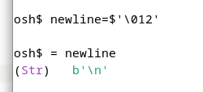
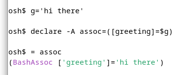

OSH is part of the Oils project.
It's a modern, compatible implementation of Unix shell.
It's focused on scripting, and has interactive features.
Why use it?
| POSIX Shell |
|
| And Bash |
|
Run osh myscript.sh, or change the #! line
For nine years, OSH has become more and more compatible!
(If you don't want a compatible shell, you may like YSH)
Other shells don't point to the error token:
echo "hello $nme"
^~~~ # precise!
example.sh:3: fatal: Undefined variable 'nme'
What's inside this string?

What's inside this bash data structure?

Use the = keyword to find out
It helps you learn what shell does, and what your programs do
Opt in to this mode to avoid code with mistakes:
shopt --set strict:all # Enable more than a dozen checks
An error that's flagged:
if shell-func; then
^~
demo/home-page.sh:9: errexit was disabled for this construct
if shell-func; then
^~~~~~~~~~
demo/home-page.sh:9: fatal: Can't run functions or procs while errexit is disabled (OILS-ERR-301)
OILS-ERR-301 is a section in the Oils Error Catalog, which suggests ways to improve your code
With strict mode, your scripts still run under other shells
(Strict mode is complementary to ShellCheck)
OSH and YSH live in the same oils-for-unix binary
We are polishing:
(in progress)
To build it, you need only a C++ compiler and ~30 seconds
To run it, you need only a POSIX system! And ~2MB of disk space
Optional dependencies are documented (GNU readline, libc extensions, ...)
We created a headless shell protocol to divorce the shell and the terminal
We'd like others to be creative with it!
YSH is the ultimate glue language
It's like shell + Python + Regex + JSON + YAML, put together seamlessly
It's for one machine, or many machines (the cloud)
shopt --set ysh:upgrade # One line to start using YSH!
echo hi
(It's also valid to use OSH forever!)
Latest Release and Published Docs
Oils Reference > OSH Table of Contents
Ask Questions on Zulip or Github